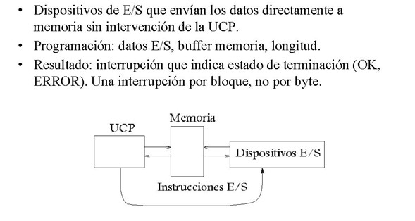

1.2.3.4 Acceso Directo a Memoria
Las técnicas de E/S que hemos visto hasta ahora requieren una dedicación importante del procesador (ejecutar un fragmento de código) para hacer simples transferencias de datos. Si queremos transferir bloques de datos, estas técnicas todavía ponen más en evidencia la ineficiencia que tienen. En E/S programada implica que el procesador no pueda hacer nada más y en E/S por interrupciones descargamos el procesador de la sincronización a costa de hacer las rutinas de atención más largas para garantizar el estado del procesador, lo que limita la velocidad de transferencia.
En este apartado describiremos una técnica mucho más eficiente para transferir bloques de datos, el acceso directo a memoria (DMA). En esta técnica el procesador programa la transferencia de un bloque de datos entre el periférico y la memoria encargando a un nuevo elemento conectado al bus del sistema hacer toda la transferencia. Una vez acabada, este nuevo elemento avisa el procesador. De esta manera, el procesador puede dedicar todo el tiempo que dura la transferencia del bloque a otras tareas. Este nuevo elemento que gestiona toda la transferencia de datos entre el periférico y la memoria principal lo denominamos módulo o controlador de DMA o también en versiones más evolucionadas canal o procesador de E/S.
Utilizando la técnica de E/S por DMA se descarga al procesador de la responsabilidad de llevar a cabo la sincronización y el intercambio de datos entre el periférico y la memoria.
Por otra parte, nos aparece una nueva problemática en el computador, ya que hay dos dispositivos –el procesador y el controlador de DMA– que tienen que acceder de manera concurrente a la memoria y hay que establecer un mecanismo para resolver este conflicto.
